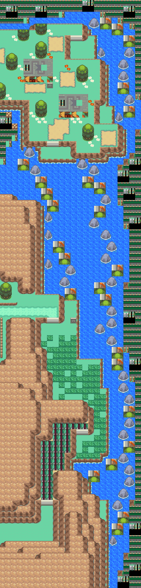
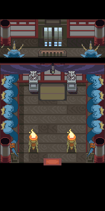

（名称未解出）｜40号水路；龙穴
单打 ｜ 队伍 6 只 ｜ 40号水路；龙穴
概况
- 名称：（名称未解出）
- 对战形式：单打
- 队伍规模：6 只
- 实际地区／场景：40号水路；龙穴
- 训练家道具：厉害伤药、厉害伤药、厉害伤药、钥石
队伍
等级为该记录内的基础队伍等级。
| # | 宝可梦 | 等级 | 携带 | 招式 |
|---|---|---|---|---|
| 1 | 黏美龙 | 43 | 无 | 龙之波动（龙） ／ 浊流（水） ／ 污泥波（毒） ／ 强力鞭打（草） |
| 2 | 哈克龙 | 43 | 无 | 龙息（龙） ／ 水流尾（水） ／ 电磁波（电） ／ 神速（一般） |
| 3 | 老翁龙 | 44 | 无 | 龙之波动（龙） ／ 巨声（一般） ／ 喷射火焰（火） ／ 电磁波（电） |
| 4 | 甲壳龙 | 44 | 无 | 龙爪（龙） ／ 岩崩（岩石） ／ 咬碎（恶） ／ 守住（一般） |
| 5 | 戟脊龙 | 45 | 无 | 巨剑突击（龙） ／ 冰柱坠击（冰） ／ 地震（地面） ／ 龙之舞（龙） |
| 6 | 电龙 | 46 | 超级石 | 放电（电） ／ 龙之波动（龙） ／ 力量宝石（岩石） ／ 电磁波（电） |
性格 · 努力值 · 个体值
- 黏美龙：性格 内敛（Modest）；个体值 31；努力值 HP6 / 特攻252 / 特防252；特性：随机第1/第2特性（Random 1&2）。
- 哈克龙：性格 爽朗（Jolly）；个体值 31；努力值 HP6 / 攻击252 / 速度252；特性：随机第1/第2特性（Random 1&2）。
- 老翁龙：性格 内敛（Modest）；个体值 31；努力值 HP6 / 特攻252 / 特防252；特性：随机第1/第2特性（Random 1&2）。
- 甲壳龙：性格 固执（Adamant）；个体值 31；努力值 HP252 / 攻击252 / 速度6；特性：随机第1/第2特性（Random 1&2）。
- 戟脊龙：性格 爽朗（Jolly）；个体值 31；努力值 HP6 / 攻击252 / 速度252；特性：随机第1/第2特性（Random 1&2）。
- 电龙：性格 内敛（Modest）；个体值 31；努力值 HP6 / 特攻252 / 特防252；特性：随机第1/第2特性（Random 1&2）。
已知特殊规则
该记录无已确认的特殊规则。
溯源：wiki_export/world/data/trainers.json 指针 /trainers/291；地区名来自 wiki_export/world/data/maps.json；道具名来自 wiki_export/core/data/items.json；特殊规则文字依据 trainers_research/README.md。稳定编号 0291。
正文不展示 ROM 地址与原始字节。
地点地图
共享RGB底图；点击可缩放定位。数字对应本页相关地点，不代表地图上全部事件。
40号水路

地图范围记录：当前资料没有精确人物／遭遇坐标。
龙穴

地图范围记录：当前资料没有精确人物／遭遇坐标。